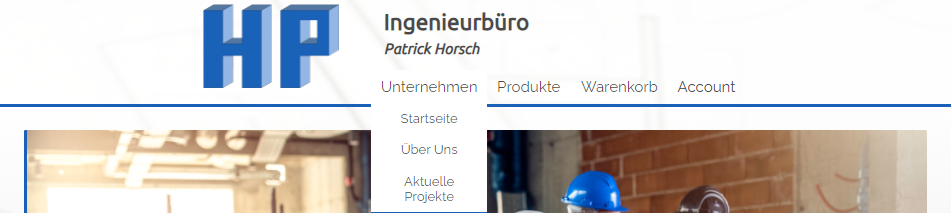

- Branschutz
- Eingabeplanung
- Tragwerksplanung
- Wärmeschutz
Zudem ist ein Onlineshop geplant, in welchem aktuelle Angebote und Dienstleistungen bequem von Zuhause oder Unterwegs gekauft oder gebucht werden können.
Zudem ist ein Onlineshop geplant, in welchem aktuelle Angebote und Dienstleistungen bequem von Zuhause oder Unterwegs gekauft oder gebucht werden können.
Wie bereits erwähnt ist der Zweck der Onlinepräsenz, den Gästen und Kunden einen Einblick in die Dienstleistungen des Ingenieurbüros zu vermitteln. Zudem steht im Mittelpunkt die Kommunikation zwischen interessenten und den Mitarbeitern des Büros, um vor einem Kauf einer odere mehrerer Dienstleistungen, beratend tätig zu werden.
Der Administrator muss Accounts verwalten, d.h. löschen- und vergabe von Rechten an angemeldete Nutzer.
Gäste sollen sich registrieren und anmelden können um Produkte und Diensleistungen zu ordern. Zudem soll ein Gast seine Daten ändern und ein neues Passwort anfordern können.
Wichtig zu beachten ist, die Anbindung an einen Email-Server, zur Kontaktaufnahme und Passwortrücksetzung im Rahmen des Modulprojektes, aufgrund der technischen Gegebenheiten und Vorgaben Seitens der Dozenten, nicht implementiert wird.
Beispielsweise gefiel uns und unserem Auftraggeber der Webauftritt von Firma Geologie Veith besonders gut; https://www.geologie-veith.de
Wir fanden die gesamte Struktur der Seite sehr interessant und vor allem hat uns die Slideshow auf der Landingpage inspiriert. Wir haben diese inspiration genommen und sie in ähnlicher form umgesetzt.
Auch fanden wir den Footer dieser Webseite sehr interessant, vor allem die hat uns die Karte zum Firmensitz beeindruckt.

Auf der Homepage der Umweltbank fanden wir ein schöne möglichkeit Artikel in mobilen Ansichten darzustellen. Zudem gefiel uns das schlichte Design der Homepage, Weiß und eine Kontrastfarbe, auch dies floss in unsre Designentscheidung ein; https://www.umweltbank.de/
Auf der Homepage der ava.consult haben uns besonders die Bilder in Kreiselementen, was wir beispielsweise für die Darstellung der Zertifikate auf
unserer Landingpage verwendet haben;
https://www.awaconsult.com/
Nach anfänglichen Problemen in Sachen Design, wurde uns schnell bewusst, dass wir für uns unpassende Methoden verwendeten um das Aussehen zu visualisieren. Da wir sehr kommunikative Personen sind, wurde das Design meist on the fly, direkt im Code geändert und Perfektioniert. Das Erstellen von Mockups legten wir sehr schnell ab und konzentrierten uns auf den wesentlichen Prozess.
Hier ist der Seitenaufbau unserer Domäne dargestellt. Die Seiten die über die Navigationsleiste zu erreichen sind, sind dunkelblau, welche wiederum auf ihre hellblau dargestellten Unterseiten weiterführen. In Grün sieht man die Inhalte die erreichbar sind, nachdem man sich als User angemeldet hat und in orange die, die als Administrator zur Verfügung stehen. Hierbei wird Dunkel angezeigt, welche der Navigation hinzugefügt werden und die hellen sind die jeweiligen neune Unterseiten.

Beim Footer orientierten wir uns stark am Design von Geologie Veigth, da uns das auf Anhieb gefiel. Wichtig war uns hier die Durchlässigkeit dessen, damit die Seiten mit weniger Inhalt (beispielsweise Login), nicht gequetscht wirken. Links sind zusammengefasst noch einmal die wichtigsten Daten des Impressums in einer kleinen Übersicht, sowie darunter eine Verlinkung zu Impressum selbst. Rechts befindet sich eine GoogleMaps Verlinkung um den Standort der Firma IBHorsch sofort einsehen zu können.

Für die Firmenpräsentation haben wir es bei einem schlichten Design belassen, mit Hauptaugenmerk auf "Mitglieder" der Firma dargestellt durch das Titelbild, weiter unten befindet sich ein zweites zur Auflockerung des GEsamtbilds was vom Text umflossen wird.
Die Darstellung der Projekte ähnelt stark einer Nachrichten Seite, da hier auch nur aktuelles wiedergegeben werden soll so ist die Seitenaufteilung in eine main und eine aside section erfolgt um einerseits den Hauptartikel den großteil der Seite zu geben, aber auch noch weitere Projekte oder ähnliches Darstellen zu können.
Desweiteren befindet sich ein automatischer Slider am Fuß direkt über dem Footer um eine Slideshow von aktuellen Bildern zu präsentieren, dies dient dazu der ansonsten nicht interaktiven Seite, etwas dynamik zu verleihen.
Das Impressum sticht mit einem Panorama Bild von Regensburg hervor, welches Ruhe austrahlt und so den "Abschluss" der Domäne bildet. Mit Flex Containern dargestellt befindet sich unterhalb eine tabellarische Auflistung aller nötigen Daten zur Firma in abwechselnden grau und weiß. Zum Schluss befindet sich noch ein Button zur Weiterleitung auf die Dokumentation.
Die Wiedergabe der Produkte befindet sich im Shop, auf welchen man direkt weitergeleitet wird, wenn man in der Navigation auf "Produkte" klickt. Als erste sieht man bis oben eine neue zweite Navigationsleiste in grau, diese ist nur in der Produkte Kategorie enthalten und umfasst den Zugriff auf ein Kontaktformular, den Shop selbst, Ein Suchfeld zum finden von bestimmten Items über enthaltene Wörter und hier nochmal dem Warenkorb, dargestellt durch ein Icon.
Darunter befinden sich 5 Buttons zur Filterung der im Shop dargestellten Artikel, diese beziehen sich auf eine der Vier Kategorien die jedes Item besitzt, bzw. dem "Alle" Button um die Filterung wieder Rückgängig zu machen.
Danach folgt die eigentliche Darstellung des Shops, als Auflistung der Artikel. Diese Wurde Hauptsächlich über Flexcontainer realisiert und gewrappt um eine feste Größe der einzelnen Items verwenden zu können und einen Umbruch zu schaffen, so dass bei Bildschirmgrößen Änderung Der Shop ein-, bis dreispaltig angezeigt wird. Die Artikel selbst beinhalten den Namen, ein Bild, die Beschreibung, die zugehörige Kategorie sowie dessen Preis welche dynamisch aus der Datenbank geladen werden.Um dem Warenkorb Items hinzufügen, muss lediglich die Anzahl über die Buttons links bestimmt und anschließend über den "ADD TO CART" Button bestätigt werden. Dies funktioniert jedoch nur als eingeloggter Nutzer und wird als nicht funktionsfähig durch Ausgrauung im ausgeloggten Zustand dargestellt.
Der Warenkorb beinhaltet zwei Bereiche, zur linken den eigentlichen Warenkorb mit einer Auflistung aller sich im Korb befindenden Artikel und zur rechten ein Feld mit der Gesammtsumme des Einkaufs, sowie ein Button zur Weiterleitung zum Verkaufsabschlusses. Die Auflistung präsentiert kurz den Artikel durch einen Namen und ein Bild und zeigt Stück- und Gesammtpreis an(dynamisch durch Datenbank geladen).Sie bietet weiterhin die Möglichkeit die Anzahl der Artikel, wie auch im Shop über die Buttons anzupassen, sowie diese, wenn nötig, über den "Mülltonne" Icon wieder aus der Liste zu entfernen

Die "Mein Konto" Seite beinhaltet eine kleinere Navigationsleiste über die man seine Kontodaten und seine Vergangen Bestellungen erreichen kann, ebenso ist es möglich sich über dieses Menü auch auszuloggen. Diese Leiste ist in allen Unterseiten in der Verwaltung enthalten und unterscheidet sich zwischen Nutzer und Administartor lediglich im zweiten Punkt bei der "Meine Aufträge" zu "Administration" wird.
Die Seite enthält eine Zusammenfassung aller Nutzerdaten, welche hier auch geändert werden können. Dies geschieht ganz einfach indem man den Inhalt der einzelnen Textboxen anpasst und dies anschließend über den "Änderungen übernehmen" Button bestätigt, was die bisherigen Daten in der Datenbank überschreibt. Der Button "Neues Passwort anfordern" besitzt durch fehlende Email-Server Verknüpfung noch keine Funktion. Als letztes lässt sich über diese Seite noch der Account löschen was den Nutzer vollständig aus der Datenbank entfernt.

Die Unterseite "Meine Aufträge" war dazu gedacht eine Auflistung aller bestehenden Einkäufe des jeweilgen Nutzers wiederzugeben, wurde jedoch aus Zeitmangel nicht mehr realisiert.

Die "Accounts verwalten" Seite dient dem Administrator eine Gesamtansicht aller im System eingetragenen Benutzer zu haben, dargestellt durch eine mit Flexboxen realisierte Tabelle und diese daraus und aus der Datenbank zu entfernen, das geschieht über das rote "X" Icon
Die Tabelle members beinhaltet die Informationen aller angemeldeten Benutzer, die Rolle des Benutzers, sowie einen Verweis auf die Adresse des Benutzers.
| Attribut | Typ | Länge | Notwendigkeit | Bedingung | Anmerkung |
|---|---|---|---|---|---|
| id | int | - | Ja | PK, AI | |
| varchar | 255 | Ja | PK | ||
| password_hash | varchar | 255 | Ja | ||
| roll | varchar | 45 | Ja | ||
| firstname | varchar | 255 | Ja | ||
| lastname | varchar | 255 | Ja | ||
| gender | char | - | Ja | ||
| phone | varchar | 20 | Nein | ||
| addresses_id | int | - | Ja | PK |
Die Tabelle "addresses" wird daür genutzt, die Adressen der verschiedenen Nutzer zu speichern.
| Attribut | Typ | Länge | Notwendigkeit | Bedingung | Anmerkung |
|---|---|---|---|---|---|
| id | int | - | Ja | PK, AI | |
| street | varchar | 64 | Ja | ||
| house number | varchar | 10 | Ja | ||
| city | varchar | 64 | Ja | ||
| zip | varchar | 5 | Ja |
Die Tabelle "orders" beinhaltet informationen zum Bestellstatus sowie des Bestelldatums. Hintelegt sind hierfür noch die Adress- sowie Nutzer-ID des Kunden.
| Attribut | Typ | Länge | Notwendigkeit | Bedingung | Anmerkung |
|---|---|---|---|---|---|
| id | int | - | Ja | PK, AI | |
| status | varchar | 15 | Ja | ||
| order date | datetime | 15 | Ja | ||
| addresses_id | int | - | Ja | PK | |
| members_id | int | - | Ja | PK |
Die Tabelle "member_has_products" fungiert als Warenkorb in unserer Datenbank und wird daher für die Zuordnung der vom Kunden ausgewählten Artikel, mittles NutzerID und ProduktID zum jeweiligen Kunden genutzt. Sie enthält außerdem die Bestellmenge des Artikel.
| Attribut | Typ | Länge | Notwendigkeit | Bedingung | Anmerkung |
|---|---|---|---|---|---|
| id | int | - | Ja | PK, AI | |
| addresses_id | int | - | Ja | ||
| members_id | int | - | Ja |
Die Tabelle "products" beinhaltet Informationen für die Produkte, sowie Verweise auf die Tabellen "images" und "categories".
| Attribut | Typ | Länge | Notwendigkeit | Bedingung | Anmerkung |
|---|---|---|---|---|---|
| id | int | - | Ja | PK, AI | |
| name | varchar | 255 | Ja | ||
| description | varchar | 2000 | Ja | ||
| std_price | decimal | 10,2 | Ja | ||
| images_id | int | - | Ja | PK | |
| categories_id | int | - | Ja | PK |
Die Tabelle "orders_has_products" dient als Verknüpfungstabelle zur Rechnungserstellung.
| Attribut | Typ | Länge | Notwendigkeit | Bedingung | Anmerkung |
|---|---|---|---|---|---|
| id | int | - | Ja | PK, AI | |
| orders_id | int | - | Ja | PK | |
| products_id | int | - | Ja | PK | |
| amount | int | - | Ja | ||
| price | decimal | 10,2 | Ja |
Die Tabelle "categories" beinhaltet die Information zur Art des Produktes welche eine der folgenden entspricht: Wärmeschutz, Feuerschutz, Tragwerksplanung und Eingabeplanung/p>
| Attribut | Typ | Länge | Notwendigkeit | Bedingung | Anmerkung |
|---|---|---|---|---|---|
| id | int | - | Ja | PK, AI | |
| name | varchar | 45 | Ja | unique |
Die Tabelle "images" dient zur Zuordnung der Bilder zum jeweiligen Produkt und beinhaltet den Dateinamen des Artikels, sowie einen "alt_text" zur scriptlosen Darstellung.
| Attribut | Typ | Länge | Notwendigkeit | Bedingung | Anmerkung |
|---|---|---|---|---|---|
| id | int | - | Ja | PK, AI | |
| filename | varchar | 255 | Ja | unique | |
| alt_text | varchar | 255 | Ja |
Für das Projekt wurden 3 verschiedene Rollen berücksichtigt hierzu zahlen:
Die nachfolgenden Use-Cases sollen zur Verdeutlichung der jeweiligen Szenarien beitragen
.png)
Abbildung: Business Use Case
.png)
Abbildung: Warenkorb verwalten
.png)
Abbildung: Konto verwalten
.png)
Abbildung: Account erstellen
.png)
Abbildung: Anmelden
.png)
Abbildung: Accounts verwalten
Da in unserer Zusammenarbeit verschiedene Browser zum darstellen der Website benutzt wurden, sind relativ früh kleinere Unterschiede aufgetaucht die sich jedoch einfach beheben ließen indem wir die Standardeinstellung der einzelnen Elemente weiter eingegrenzt hatten (benutzt wurden Chrome, Firefox und Microsoft Edge).
Bei einem Endgerät war es nicht möglich das Impressum zu laden (selbst bei vollständiger Funktion aller anderen Seiten). Leider konnte dieses Problem auch nach mehrmaligen durchsehen der html, sowie der css nicht identifiziert und damit auch nicht behoben werden.
Eine größere Schwierigkeit stellte die Umsetzung des responsiven Designs dar, da wir mit der Desktop Variante anfingen. Aber nach einiger Zeit und mit viel Geduld gelang uns auch dies zu unserer Zufriedenheit umzusetzen.
Das größte Problem während unseres Projekts entstand knapp nach der Hälfte der Zeit, bei der uns nach mehreren Rücksprachen mit den zuständigen Professoren klar wurde, dass unsere Seite nicht den Maßstab der Projektarbeit entspricht und wir dadurch gezwungen waren noch einmal ein Großteil unserer Ideen und Vorstellung zu verwerfen. An diesem Punkt brachen wir auch die Zusammenarbeit mit dem Inhaber der Firma IBHorsch ab, um uns vollständig auf die Umsetzung der wesentlichen Aspekte zu konzentrieren, hierunter zählte vor allem die Implementierung und den Ausbau des Shops.
Keine feste Seitenhierarchie bis beinahe zum letzten drittel des Projekts, führte zu einer gewissen Unordnung was sowohl die Benennung der Dateien und Elemente, als auch die Ordnerstruktur angeht. Doch nach festlegen der bestehenden Seiten und das Entfernen der überflüssigen Seiten war dies auch schnell in den Griff zu bekommen.
Anfängliche Probleme gab es bei der Nutzung von der main Branch als einziger Branch, da dies mehr als einmal zu Merge Konflikten führte, dies ließ sich jedoch leicht durch die Nutzung verschiedener Branches regeln.
Es stellte sich als Vorteil heraus, eine klare Aufgabenteilung durchzuführen wodurch jeder sein Fachgebiet besaß und es ihm möglich war, anschließend die jeweiligen anderen in seine Arbeit einzuführen und Verständisfragen zu klären. Dadurch gelang es uns Arbeit durch eigen Expertise schnell zu erledigen, sich dabei nicht gegenseitig zu behindern und dennoch ein umfassendes Wissen der gesamten Thematik zu erschließen.
Zur Aufgabenstrukturierung entschieden wir uns für Trello, da es die Möglichkeit besaß uns selbst Termine und Fristen zu setzen an die wir uns größtenteils hielten, bzw. es zu ersehen war, wenn es zu Schwierigkeiten kam. Dadurch war es möglich, in dem Projekt einen guten Überblick zu behalten nicht nur was eigene Aufgaben anging, sondern auch die der Teammitglieder, um evtl. benötigete Hilfe anbieten zu können.